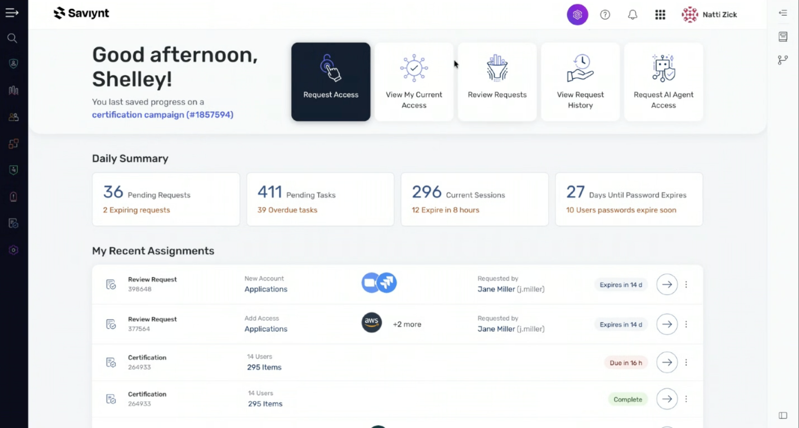
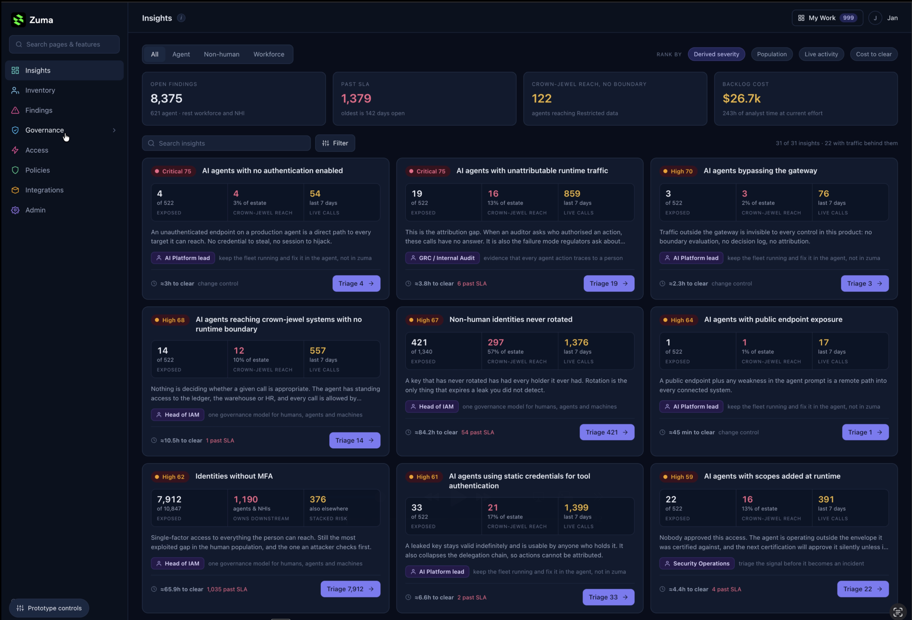
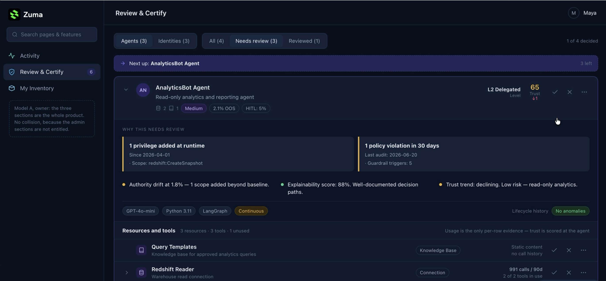
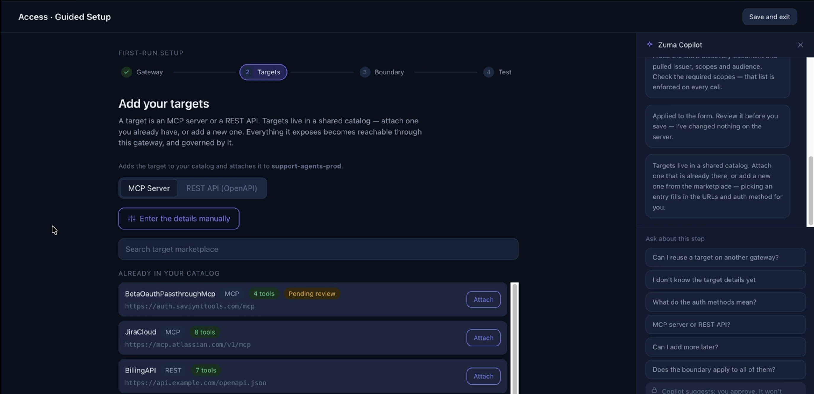
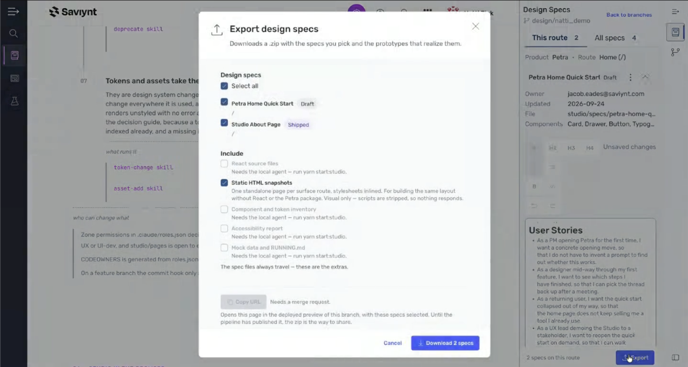

AI-DLC
Translate intent into production code, not prototypes.
From design ideas to production code
What happens when AI can work directly with a product’s code, design system, patterns and rules — instead of starting from a blank canvas?
I saw an opportunity to create an AI-native design platform that could streamline the path from design ideas to production code. That idea became Petra Studio. The work brought UX, engineering, and product together around a shared foundation for exploring, validating, and building new experiences.
The big idea
The next design-to-code shift is not just about making prototypes faster.
It is about shortening the distance between an idea and production by connecting AI, design systems, product context, and engineering foundations in one continuous workflow.
Petra Studio explored what that could look like when the design environment and the production system share the same foundation.
01 · The opportunity
When I joined, design and engineering were working from different foundations. Figma and the React code library had diverged, accessibility updates were not consistently reflected in production, and new experiences were often hand-coded page by page. Prompt-to-code tools were beginning to make ideation faster, but they stopped at the prototype.
With 54 engineers and 9 PMs for every UX designer, involving design at every handoff could not scale. Work moved from a design file to handoff, then page-by-page implementation and a separate quality review.
Idea → working experience → validate in context → production code
02 · Petra, the foundation
AI changed how we could work. I hired a UI engineer into UX, and in collaboration with UI Architecture and UI Front End, UX took ownership of the shared production code library and design system. Petra became the common foundation for UX and Engineering.
Petra is the shared production code library and design system. Petra Studio sits on top of it, giving AI a working environment where it can generate and iterate with the same components, patterns, tokens, and rules used to build the product. Petra Studio was optimized for Claude Code, the team’s main environment, and also works across AI systems, including Kiro.
Petra is an AI-evolved React library. Its components were rebuilt to make it easier to move existing React experiences toward the new foundation. New products use Petra from design through execution; existing products can migrate progressively behind a feature flag.
Translate intent into production code, not prototypes.
Evolve components, patterns, templates, and the UI shell quickly.
Support products and future needs without rebuilding from scratch.
Make accessibility, security, governance, and validation part of the foundation.
Streamline workflows and modernize existing experiences.
03 · Generate and build
Petra Studio connected an idea to the product’s real code and design system, so the result could be explored and iterated as a working experience instead of stopping at a static mockup.
Describe the experience and the problem it should solve.
Generate with production components, patterns, tokens, and rules.
Review a working experience and refine it before handoff.
Petra Studio could generate pages at different levels of complexity, from simpler layouts to richer product experiences. These examples show the range of designs it could create.




Petra Studio gave teams a company-wide library of projects to browse for inspiration or collaboration. People could search for a file, favorite projects, and create or edit work. A new project could start fresh or build on existing work.
04 · Validate as you build
A reusable accessibility skill could inspect a component against WCAG 2.2 AA and return a structured report with the violation, location, reasoning, and suggested fix. A similar skill and report could be used for a full screen, moving quality checks into the creation process.
05 · Share the work
Selected specs and working experiences could be packaged for sharing. The work could be used internally or exported as standalone HTML for conversations with customers.
